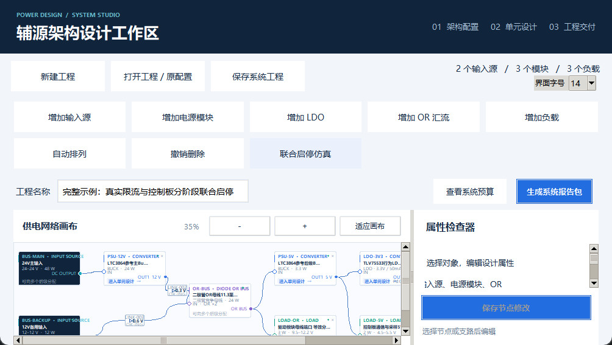

01 新建 打开与保存系统工程
系统工程保存供电节点、连接、布局和各单元参数。单元配置保存一台电源的设计。把两类文件分开命名，重开时就能找到需要继续的工作。
启动桌面程序，进入“辅源架构设计工作区”。
操作步骤
- 选择工程起点 点“新建工程”建立项目。学习时可从“架构示例”载入“分阶段电源树 · 联合启停”。切换示例前按提示保存正在编辑的工程。
- 编辑后保存节点 在“工程名称”填写本次设计的名称。在画布选中节点或支路，在属性检查器改动后点“保存节点修改”或“保存支路修改”。
- 回存单元设计 双击开关电源模块进入计算器，改好参数后点“返回系统架构”。LDO 使用“返回系统架构并保存”。两种操作都把单元当前参数回存到系统工程。
- 保存为可交接的文件 点顶部“保存系统工程”，选择文件名与目录。另需交接单元时，在其计算器使用“文件 → 保存配置”。
- 复核重开的内容 用“打开工程 / 原配置”选择刚保存的 JSON。核对模块、供电连线、输出编号，再打开单元确认改动。若打开的是旧单元 JSON，软件会把它导入为单个电源模块。

从上方定位新建、打开和保存工程。双击画布上的电源模块可以进入单元设计。
输入字段
| 字段或选项 | 单位或取值 | 输入的含义及用途 |
|---|---|---|
| 工程名称 | 文本 | 画布上的项目标题，也是保存系统工程时建议的文件名。 |
| 节点名称 | 文本 | 设备或负载的显示名称。选中支路时先按节点编号及 OUT 编号核对两端。 |
| 系统工程文件 | JSON | 用于恢复整个供电网络和单元参数。随文件交接时应保留各模块在画布上的关联。 |
| 单元配置文件 | JSON | 可独立导入开关电源计算器。导入画布后还需补充上游、下游和端口连接。 |
结果核对
靠属性检查器确认当前对象的改动已保存，再执行整份工程保存。自动恢复用于在本机继续操作，独立 JSON 用于留档和交接。
重开时若画布只有一个模块，确认选取的是系统工程文件还是单元配置。